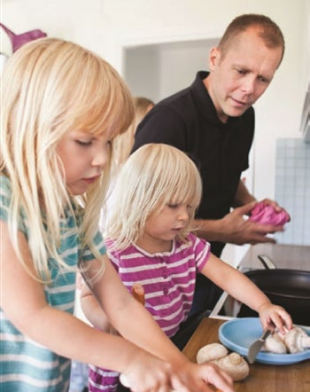
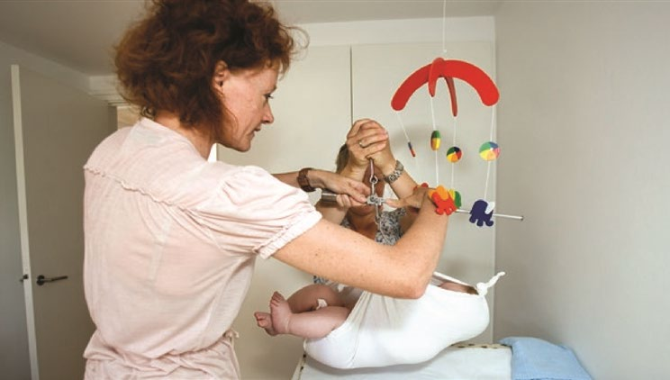
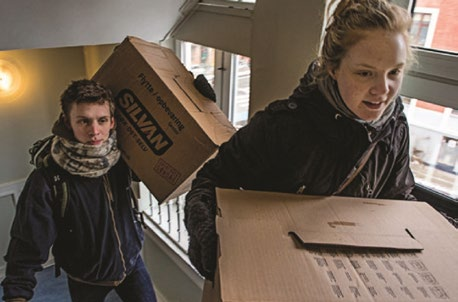

Fakta-ark 7: Familieliv
Áudio
sidde 40
Fakta-ark 7: Familieliv
Læremateriale Til Medborgerskabsprøven

sidde 41
Det er de enkelte familiers ansvar at få livet i familien til at fungere og at give børnene trygge forhold at vokse op i.
Læremateriale Til Medborgerskabsprøven Fakta-Ark 7: Familieliv
Men samfundet har en række tilbud, der er med til at skabe gode rammer* for familielivet. Man har fx ret til barselsorlov, og der er tilbud om børnepasning. Samtidig er der nogle regler i samfundet, som beskytter børns, mænds og kvin ders rettigheder. De gælder også i hjemmet.
Dette fakta-ark handler om: • Familielivets mange former • Ægteskab og parforhold • Skilsmisse • Graviditet, fødsel og barselsorlov • Børn og unges rettigheder
Familielivets Mange Former
Den mest almindelige familieform i Danmark består af en kvinde og en mand og deres fælles børn. Men familielivet kan også have andre former. Og i nogle fami lier har den ene eller begge parter været gift før. Deres familie kan bestå af børn fra begges tidligere ægteskaber og fælles børn fra det nuværende ægteskab. Der er også familier, hvor forældrene ikke er gift.
Herudover er der familier, hvor parterne er af samme køn, og familier, hvor børnene er adopterede fra fx Asien. Der er små familier, som består af enlige med deres børn, og der er familier, hvor man bor flere generationer sammen.
Ægteskab Og Parforhold
Der gælder nogle regler om ægteskab i Danmark. En af reglerne er, at det ikke er tilladt at være gift med mere end én person ad gangen. Når man bliver gift, skriver man derfor under på, at man ikke er gift i forvejen.
Man kan selv vælge, om man vil gifte sig med en person af det modsatte køn eller en person af sit eget køn. En anden regel er, at man ikke må tvinge* en person til at gifte sig mod perso nens vilje. Begge parter skal ønske ægteskabet. Man skal også være fyldt 18 år for at indgå ægteskab.
sidde 42
Selv om man kan blive gift, fra man er 18 år, gifter mange sig først, når de er færdige med deres uddannelse eller har fået børn.
Læremateriale Til Medborgerskabsprøven Fakta-Ark 7: Familieliv
Man kan blive gift på rådhuset, i den danske folkekirke eller i anerkendte tros samfund*. Hvis man vil have en religiøs vielse uden for den danske folkekirke, der samtidigt er borgerligt gyldig (det vil sige gyldigt i følge dansk lov), skal præsten (eller den religiøse leder) i trossamfundet have en bemyndigelse*.
I de fleste familier i Danmark har både manden og kvinden et job, og de deles normalt om opgaverne i hjemmet.
Når man er gift, skal man som udgangspunkt sørge for hinanden økonomisk. Det betyder, at man ikke kan få visse former for økonomisk hjælp fra kommunen, hvis ens ægtefælle har en indtægt eller formue* af en vis størrelse. Det samme gælder for visse ydelser for par, der lever sammen uden at være gift.
Par af samme køn kan blive gift på lige fod med andre par, og de kan adoptere børn på samme vilkår som par af forskelligt køn.
Forældre, der er gift med hinanden, har fælles forældremyndighed* over børnene. Fælles forældremyndighed betyder, at forældrene skal tage vigtige beslutninger om barnet i fællesskab. Det kan fx være, hvad barnet skal hedde, barnets opdragelse, hvor det skal gå i skole, hvilken religion det skal have, eller hvor det skal passes, hvis forældrene arbejder.
Mange par vælger at bo sammen – og eventuelt få børn – uden at være gift. Hvis de får børn, har de bl.a. fælles forældremyndighed, hvis de i forbindelse med barnets fødsel afgiver en erklæring om, at de sammen vil varetage omsorgen og ansvaret for barnet.
Skilsmisse
I Danmark ender cirka 40 procent af alle ægteskaber med en skilsmisse. Hvis man ikke ønsker at fortsætte sit ægteskab, har man ret til at få sepa ration.
Separation er en slags prøvetid, hvor man stadig er gift, men normalt bor hver for sig. Efter et halvt års sepa ration, har man ret til skilsmisse. Er ægtefællerne enige herom, kan de dog også blive skilt med det samme uden først at blive separeret. Selv om der er uenighed, kan man i visse situationer også blive skilt med det samme, hvis der fx er tale om utroskab eller vold. Efter en skilsmisse har begge parter ret til at gifte sig igen.

sidde 43
Hvis et ægtepar med børn bliver skilt, er det forældrene selv, der aftaler, hvordan de vil dele ansvaret for børnene. Forældrene kan fx aftale, hvem af forældrene barnet skal bo hos, og hvor meget barnet skal være hos den anden forælder. Hvis de ikke kan blive enige, kan de få hjælp og rådgivning i Familieretshuset*. Kan forældrene fortsat ikke blive enige, kan Familieretshuset eller domstolene træffe en afgørelse om samvær, forældremyndighed og barnets bopæl. Dette gælder også for forældre, der aldrig har været gift med hinanden. Mange børn, hvis forældre ikke bor sammen, bor hos forældrene på skift.
Læremateriale Til Medborgerskabsprøven Fakta-Ark 7: Familieliv
Hvis forældrene flytter sammen med en ny partner, får børnene en ny familie (”papmor”, ”papfar” og måske ”papsøskende”). Men der er også mange, der efter en skilsmisse lever alene med børnene.
Graviditet, Fødsel Og Barselsorlov
Gravide har ret til en række undersøgelser hos læge og jordemoder. Formålet med undersøgelserne er at sikre, at kvinden og barnet har det godt under gravi diteten. Hvis der opstår problemer under graviditeten, kan man få hjælp på et sygehus eller et sundhedscenter, hvor der er tilknyttet* en jordemor. Jorde moderen kan desuden fortælle om, hvilke tilbud om fødselsforberedelse der er. Til fødselsforberedelse lærer man fx om, hvad der sker med kroppen under graviditeten, og om hvordan barnet udvikler sig. Desuden lærer man, hvordan man kan gøre fødslen lettere.
I Danmark føder de fleste på et sygehus, men man kan også føde hjemme. Hvis man føder på et sygehus, er det almindeligt, at partneren, et familiemedlem eller en nær* ven er med til fødslen. Efter fødslen kan man få vejledning på sygehuset, fx om pleje af barnet eller om amning.
Forældre til nyfødte børn får besøg af en sundhedsplejerske i hjemmet. Sund hedsplejersken undersøger barnet, følger dets udvikling og vejleder og rådgiver forældrene, så de får den bedst mulige start med barnet. Besøgene er gratis.

sidde 44
Alle kvinder har ret til at holde fri fra arbejde i en periode, før og efter at de har født. Barnets far har også ret til at gå på barsel. Nogle arbejdspladser har aftaler om, at de ansatte får løn under orloven. Hvis man ikke kan få løn under orloven, kan man normalt få barselsdagpenge. Man skal have optjent retten til barsels dagpenge ved at arbejde eller som medlem af en a-kasse.
Læremateriale Til Medborgerskabsprøven Fakta-Ark 7: Familieliv
I Danmark har en kvinde ret til at få en abort inden slutningen af 18. gravidi tetsuge. Det er kvinden, der selv bestemmer, om hun vil have en abort. Kvinden skal altså ikke have en tilladelse fra barnets far for at få en abort. I de fleste forhold vil en abort være en beslutning, som kvinden og manden tager sammen.
Hvis kvinden er under 18 år, skal hun dog have tilladelse fra sine forældre. I særlige tilfælde kan hun søge om abort uden denne tilladelse. Hvis en kvinde ønsker en abort, skal hun kontakte sin læge, som vil henvise til et sygehus eller en klinik, hvor aborten vil blive foretaget. Det koster ikke noget at få foretaget en abort.
Børn Og Unges Rettigheder
Børn og unge har ligesom voksne rettigheder. Børn har generelt ret til at sige deres mening om forhold, der handler om deres eget liv.
Hvis deres forældre skal skilles, har børn fx ret til at give udtryk for, om de vil bo hos deres far eller mor. Der er også regler for, hvordan børn og unge skal behandles.
Nogle af de vigtigste regler er:
- Det er forbudt at slå børn
- Børn under 13 år må normalt ikke have lønnet arbejde uden for hjemmet
- Det er forbudt at have sex med unge under 15 år
- Børn under 15 år kan ikke straffes
- Unge skal være fyldt 16 år, før de må købe almindelig øl
- Unge skal være fyldt 18 år, før de må købe meget stærk øl, vin, spiritus og cigaretter
- Unge skal være 17 år for at kunne få kørekort.
De fleste unge, der bor hjemme, aftaler med deres forældre, hvilke regler der skal gælde for dem i hjemmet. Det kan fx være regler om, hvornår de skal være hjemme, om de må gå til fester, og om de må overnatte uden for hjemmet. Mange unge – både piger og drenge – mødes i fritiden på caféer og diskoteker eller holder private fester. Der kan være meget forskellige hold ninger til, hvilke regler der skal gælde
sidde 45
i forskellige familier. På forældremøder i børnenes skole kan man aftale nogle fælles regler for børnene, når de er sammen til fx fælles fester.
Læremateriale Til Medborgerskabsprøven Fakta-Ark 7: Familieliv
Mange unge flytter hjemmefra, når de er 18-20 år, for at bo alene, sammen med en kæreste eller sammen med andre unge.
De unge er ifølge loven myndige, når de fylder 18 år. Det betyder bl.a., at de har stemmeret, kan låne penge i banken, og at de har ansvar for sig selv. Når man er 18 år, kan man også begynde at få SU (Statens Uddannelsesstøtte), hvis man går på en uddannelse, hvor man har ret til at få SU.
Selv om det er forbudt at slå børn og unge eller at have seksuel omgang med børn, sker det indimellem, at et barn bliver udsat for vold eller for seksuelle overgreb. Hvis man har kendskab til vold eller andre overgreb mod børn og unge under 18 år, har man pligt til at kontakte kommunen og anmelde det. Kommunen skal så undersøge sagen og hjælpe barnet eller den unge.
Når man fylder 17 år, kan man tage kørekort til almindelig bil og køre uden ledsager* mellem klokken 5 om morgenen og klokken 20 om aftenen. Fra klokken 20 til klokken 5 skal 17-årige køre med en ledsager over 24 år, der har haft kørekort i mindst fem år. Fra man er fyldt 18 år, har man lov til at køre bil uden en ledsager hele døgnet.
Fonte: Læremateriale til Medborgerskabsprøven, SIRI.